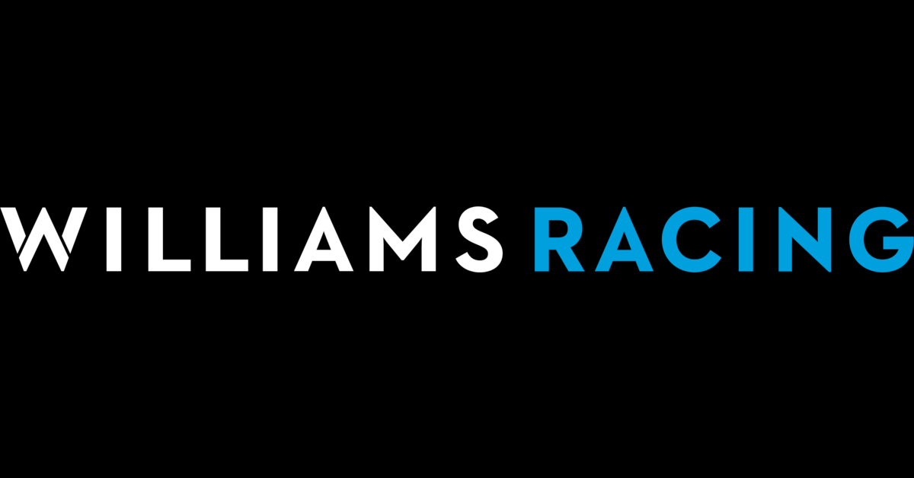
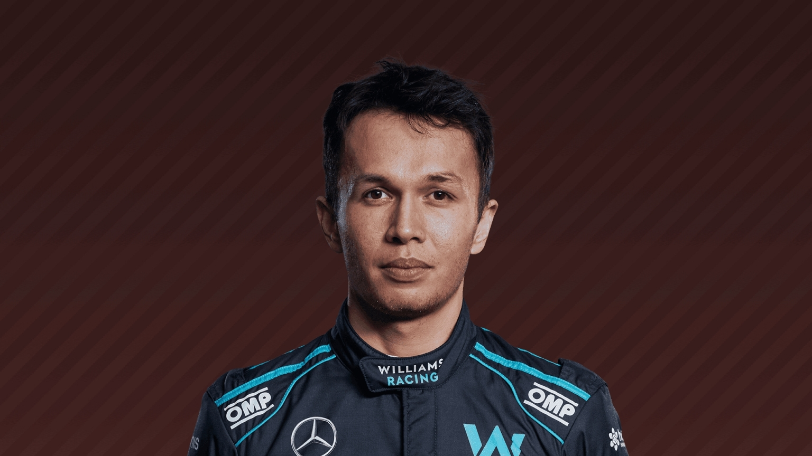
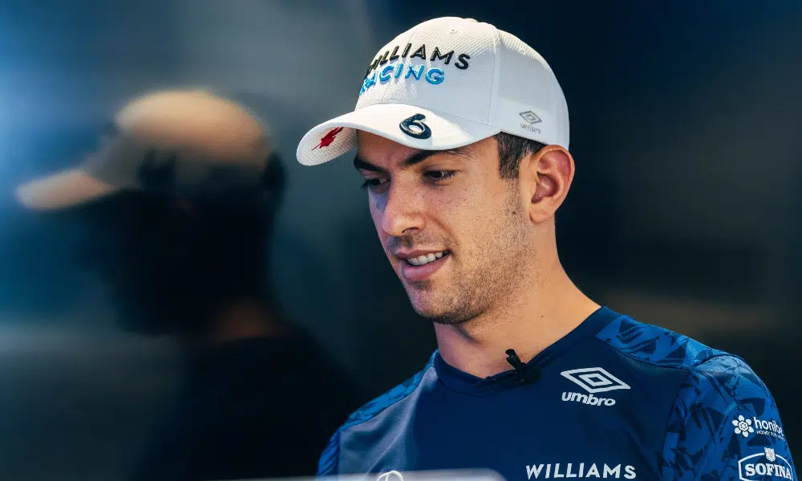

Williams

Sans doute l’une des plus célèbres écuries de la grille, Williams a débuté en Formule 1 dans les années 1970, sous l’impulsion d’un ancien mécanicien et pilote de course connu : Franck Williams. Considérée comme une petite structure familiale lors de ses premières saisons, l’équipe britannique va très rapidement écrire son histoire en remportant ses premiers titres dans les années 1980. Au fil du temps, l’écurie britannique s’est associée avec divers motoristes comme Honda ou Renault pour aller décrocher un total de 9 couronnes chez les constructeurs.
Les pilotes de la saison 2022 :
Alexander Albon

Après des débuts en monoplace en 2012 grâce au soutien de Red Bull, Alexander Albon ne s’est jamais vraiment révélé brillant dans les catégories inférieures. Avec pour seuls véritables faits d’armes une 2e place en GP3 en 2016 et une 3e place en 2018 en F2. Pourtant cela n’a pas empêché le Thaïlandais de rejoindre la F1 en 2019 chez Toro Rosso. Albon se voit promu de manière très précoce chez Red Bull pour remplacer un Pierre Gasly en difficulté à la mi-saison 2019. S’il réalise quelques belles prestations, le manque de régularité et de rythme pousse finalement Red Bull à le remplacer par Sergio Pérez. Il sera ensuite engagée par l’écurie Williams à partir de 2020.
Nicholas Latifi

Fils du dirigeant millionnaire du groupe Sofina Foods. Nicholas Latifi réalise ses débuts en monoplace en 2012 en F3 italienne puis enchaîne l'année d'après avec le championnat d’Europe de F3, sans grands résultats. En 2014, il rejoint l'équipe Prema, mais ne termine que dixième. Entre 2016 et 2019, il connaît le meilleur résultat de sa carrière avec un titre de vice-champion.
Il est finalement officialisé en fin de saison par Williams pour disputer la saison 2020.